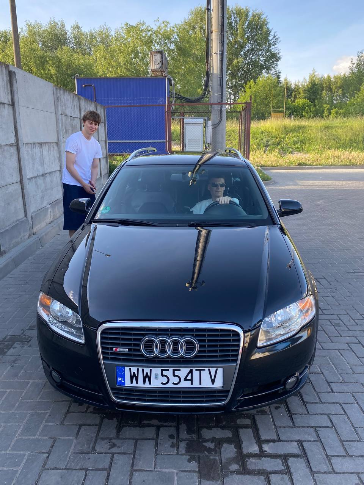
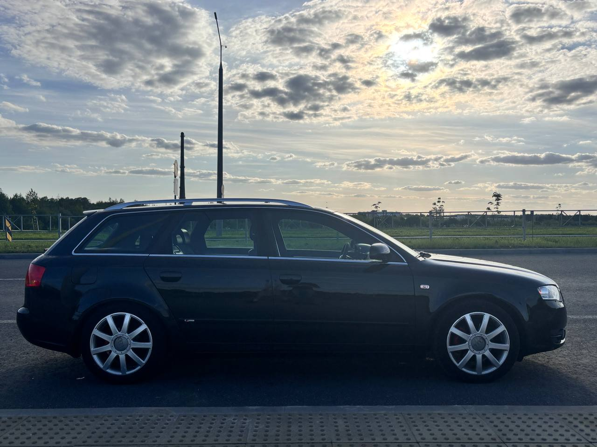

Как началось моё увлечение
Автомобили начали интересовать меня примерно с 15 лет. Постепенно этот интерес перерос в настоящее увлечение. Мне стало интересно не только смотреть на автомобили, но и узнавать больше об их особенностях и просто проводить время за рулём.
Сейчас собственного автомобиля у меня пока нет. Я езжу на автомобилях родителей, поэтому имею возможность получать собственный опыт вождения и лучше понимать, какие автомобили мне действительно нравятся.
Почему именно Audi?
Моя любимая марка автомобилей — Audi. Больше всего мне нравится эта марка потому, что у моего папы когда-то была Audi A6 C5, которую я очень любил.
Именно с этим автомобилем у меня связано много приятных воспоминаний, поэтому я считаю Audi A6 C5 одной из лучших моделей Audi.
Любимая Audi на данный момент


Audi A4 B7
Сейчас больше всего мне нравится папина Audi A4 B7.
Мне нравится внешний вид этого автомобиля, а также ощущения от вождения. Именно поэтому Audi A4 B7 занимает особое место среди автомобилей, которые мне нравятся.
Подробные характеристики этой модели можно посмотреть на сайте Avtomarket .
Что меня привлекает в автомобилях?
Больше всего в автомобилях меня привлекает сам процесс вождения. Мне нравится находиться за рулём и чувствовать автомобиль.
При этом внешний вид тоже играет для меня очень большую роль. Дизайн автомобиля может сильно повлиять на то, понравится мне машина или нет.
Особенно мне нравится:
- сам процесс вождения;
- механическая коробка передач;
- внешний вид автомобиля;
- дизайн автомобилей Audi;
- особенности разных моделей.
Механическая коробка передач
Из двух основных типов коробок передач мне больше нравится механическая коробка. Мне нравится то, что при её использовании водитель принимает более непосредственное участие в управлении автомобилем.
Автомобили, которые имеют для меня значение
| Автомобиль | Почему интересен |
|---|---|
| Audi A6 C5 | Машина моего папы, с которой связаны приятные воспоминания. |
| Audi A4 B7 | Папин автомобиль, который сейчас нравится мне больше всего. |
Другие автомобильные интересы
Помимо самих автомобилей, мне также интересна автомобильная аудиотехника.
Подробнее об этом можно узнать в разделе «Моё увлечение старыми магнитолами» .